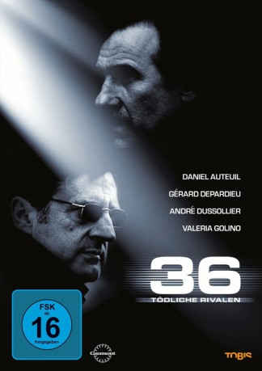
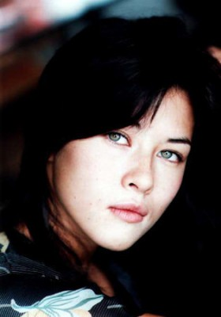
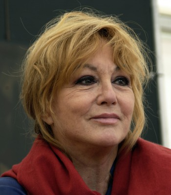

#3497 36 - Tödliche Rivalen
Alternativ: 36th Precinct (Englischer Titel)
 
 IMDB-Wertung: 7.2 / 10
IMDB-Wertung: 7.2 / 10  Metascore: 0
Metascore: 0 
Die beiden französischen Polizisten Léo Vrinks (Daniel Auteuil) und Denis Klein (Gérard Depardieu) leiten verschiedene Einheiten. Beide sind vom Ehrgeiz besessen, irgendwann den Chefposten der Pariser Polizei zu bekleiden. Da kommt eine Überfallserie gerade recht. Denn die sorgt durch ihre spektakuläre Art nicht nur für öffentlichen Druck durch die Medien, sondern bietet auch die Möglichkeit, sich zu profilieren. Beim Zugriff auf die gesuchten Gangster kommt es aber zu einem Todesfall, für den Denis Klein verantwortlich ist. Dennoch gelingt es seinem innerpolizeilichen Konkurrenten Vrinks nicht, Klein absetzen zu lassen. Stattdessen muss Vrinks ins Gefängnis, weil er wissentlich Straftaten seiner Informanten geduldet hat. Das scheint die Auseinandersetzung zwischen den beiden Polizisten endgültig zu beenden, aber nach seiner Entlassung will Vrinks zurückschlagen. Außerdem sind die Hintergründe um den Tod seiner Frau unklar, so dass er hier Nachforschungen anstellt.
Jahr: 2004
Dauer: 111 Minuten
FSK: 16
Land: Frankreich Studio: UFATonspuren:
Untertitel:
Auflösung: 1080p (1920x816) Größe: 7198 MB
Genre: Action, Thriller, Drama, Krimi
Regisseur: Olivier Marchal
Drehbuch: Scott Roberts
Soundtrack:
Darsteller:
 Daniel Auteuil als Léo Vrinks
Daniel Auteuil als Léo Vrinks Gérard Depardieu als Denis Klein
Gérard Depardieu als Denis Klein André Dussollier als Robert Mancini
André Dussollier als Robert Mancini Roschdy Zem als Hugo Silien
Roschdy Zem als Hugo Silien Valeria Golino als Camille Vrinks
Valeria Golino als Camille Vrinks Anne Consigny als Hélène Klein
Anne Consigny als Hélène Klein- Cyrille Hertel als Jamel Attia
 Ludovic Berthillot als Nounours
Ludovic Berthillot als Nounours-  Mylène Jampanoï als Jade
-  Mylène Demongeot als Manou Berliner
- Martial Odone als Videur au club , uncredited
 Daniel Duval als Eddy Valence
Daniel Duval als Eddy Valence Francis Renaud als Titi Brasseur
Francis Renaud als Titi Brasseur- Catherine Marchal als Ève Verhagen
- Guy Lecluyse als Groluc
 Alain Figlarz als Francis Horn
Alain Figlarz als Francis Horn- Vincent Moscato als Jenner
- Stéphane Metzger als Smao
- Solène Biasch als Lola Vrinks, 11 ans
- Aurore Auteuil als Lola Vrinks, 17 ans
- Denis Sylvain als Le préfet de police
- Eric Defosse als Rolf Winterstein
 Ivan Franek als Bruno Winterstein
Ivan Franek als Bruno Winterstein- Laurent Olmedo als Tony Vargas
- Christophe Rouzaud als Staneck
- Frédéric Maranber als Le juge Rousseau
- Patrick Médioni als Robert Boulanger
- Serge Beuchat als Daniel Seurat
- Thierry Guerrib als Saïd Attia
- Stéphane Orsolani als Saïd Chenaf
- Anna D'Annunzio als Florence Belkrim
- Jo Prestia als Victor Dragan
- Olivier Marchal als Christo
- Jean-Louis Bihoreau als Père de Camille
- Christian Geffroy als Fonctionnaire FBS
- Philippe Chaubet als Gendarme cimetière
- Christine Chansou als Interne hôpital
- Stéphanie Coubard als Anne Valence
- Vincent Bowen als (uncredited
- Robert Hoehn als Titi Brasseur , uncredited
- Mickaël Sabah als Figurant flic , uncredited
Datei: X:\2004(A-F)\36 - Tödliche Rivalen (2004, FSK16, 1920x816).mkv seit 19.04.2016
Festplatte: HD 2003-2004-2005(A-F)
 Es gibt insgesamt 39 Filme in der Gruppe '2004(A-F)'
Es gibt insgesamt 39 Filme in der Gruppe '2004(A-F)'